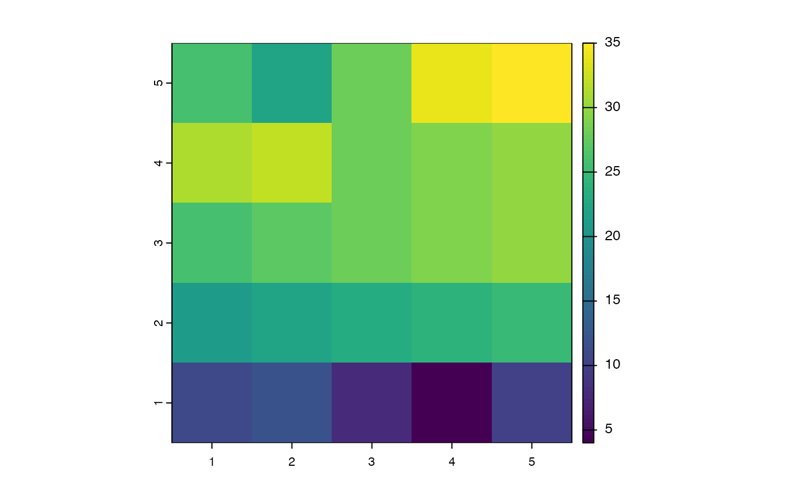

Samples deepest depth values from a
SpatVector data frame and generates a SpatRaster.
bottomRaster(rawPointData)A SpatVector object from which
bottom variables will be sampled. See Details for more about format.
A SpatRaster designed to approximate sea bottom
measurements for modeling species' distributions and/or niches.
rawPointData is a SpatVector object that
contains measurements of a single environmental variable (e.g.
salinity, temperature, etc.) with x, y, and z coordinates. The
measurements in the data.frame should be organized so that each
column is a depth slice, increasing in depth from left to right. The
function was designed around the oceanographic data shapefiles supplied
by the World Ocean Atlas
(https://www.ncei.noaa.gov/access/world-ocean-atlas-2018/).
The function selects the "deepest" (rightmost) measurement at each
x, y coordinate pair that contains data. These measurements are then
rasterized at the resolution and extent of the x,y coordinates, under
the assumption that x and y intervals are equal and represent the center
of a cell.
library(terra)
# Create point grid
coords <- data.frame(x = rep(seq(1:5), times = 5),
y = unlist(lapply(1:5, FUN = function(x) {
rep(x, times = 5)})))
# Create data and add NAs to simulate uneven bottom depths
dd <- data.frame(SURFACE = 1:25,
d5M = 6:30,
d10M = 11:35,
d25M = 16:40)
dd$d25M[c(1:5, 18:25)] <- NA
dd$d10M[c(3:5, 21:23)] <- NA
dd$d5M[c(4, 22)] <- NA
dd[,c("x","y")] <- coords
# Create SpatialPointsDataFrame
sp <- vect(dd, geom = c("x", "y"))
# Here's the function
result <- bottomRaster(rawPointData = sp)
plot(result)
